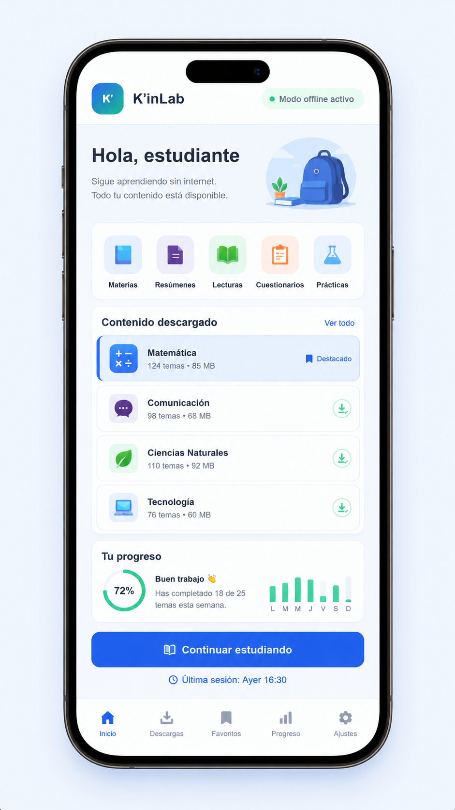
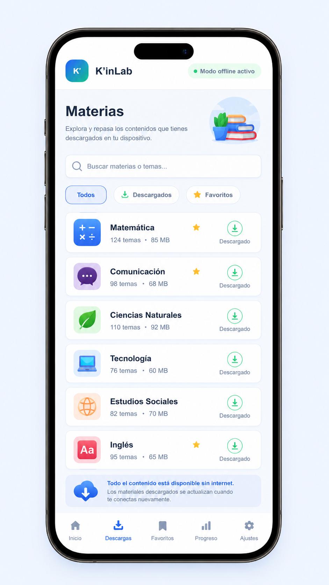
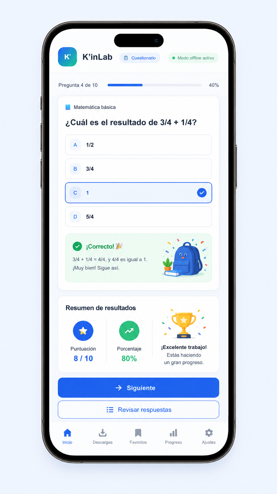
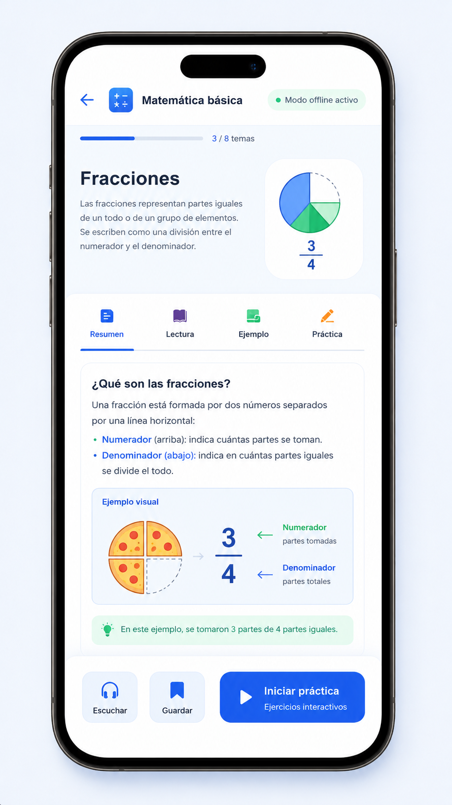

Pantalla de inicio
Vista principal de la app con acceso rápido a contenidos y secciones educativas.
K'inLab está diseñada para ofrecer una experiencia sencilla, clara e intuitiva para estudiantes que necesiten repasar sus contenidos desde casa.

Vista principal de la app con acceso rápido a contenidos y secciones educativas.

El estudiante puede visualizar las materias o temas descargados en su dispositivo.

Acceso a resúmenes, lecturas y explicaciones para reforzar el aprendizaje.

Sección pensada para que el estudiante pueda autoevaluar sus conocimientos.
K'inLab busca ofrecer una herramienta visualmente amigable, intuitiva y funcional, permitiendo a los estudiantes interactuar con materiales de estudio descargados previamente desde su centro educativo.
Volver al inicio